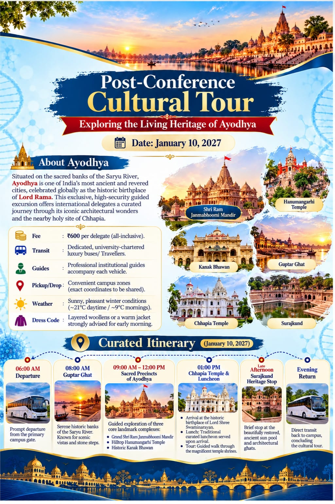

Tour Fee
₹600 per delegate (all-inclusive)

ICMS 2027 • AYODHYA, UTTAR PRADESH
Exploring the Living Heritage of Ayodhya
Sunday, 10 January 2027

₹600 per delegate (all-inclusive)
Dedicated, university-chartered luxury buses / travellers.
Professional institutional guides accompany each vehicle.
Prompt departure from the primary campus gate.
Visit the serene historic banks of the Saryu River, known for scenic vistas and stone steps.
Guided exploration of three landmark complexes:
Visit the historic birthplace of Lord Shree Swaminarayan. Traditional curated luncheon served upon arrival, followed by a guided walk through the temple shrines.
Brief stop at the restored ancient sun pool and its architectural ghats.
Direct transit back to campus, concluding the cultural tour.
For tour registration and further arrangements, please contact the ICMS 2027 organising team.
Contact Organising Team